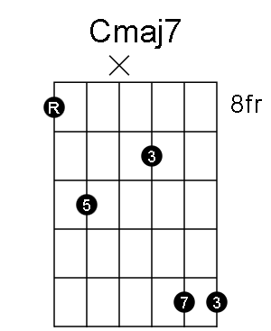

If you are on this page, it is probably because I filled out a job application for your company and included this link. Below are a few of my samples. Click "Read On" to see the full page.
AI Bookmarks

(This is a carry-over from my tech-tips site. Seemed silly managing two sites.) Starting a running list of AI links as I start to use the tools more and more. (Updated 04/30/2024)
Chat Apps
Groq Chat
https://groq.com/ - Test llama3:70b - born with the vision of making …
DAW Bookmarks

Starting a running list of Digital Audio Workstation links. There have been some new ones on the market that are starting to include AI functions. (Updated 05/01/2024)
Studio One
https://www.presonus.com/en-US/studio-one.html - Studio One is a digital audio workstation (DAW) software developed by PreSonus …
Get Started with AI
High level infographic on how to get started with AI. Check out my post on AI Bookmarks to see the latest tools I am testing.

Building Blocks of Blue
I am having the most fun with this site. It takes a prompt and turns it into a song with chord progressions, lyrics, and more.
So, I asked Angela for an idea and she said, "a blues song about building LEGO sets like pieces breaking or having …
Every Noise at Once
I have been meaning to bookmark Every Noise at Once for a long while. With an impressive collection of musical styles, including folk, electronic, and hip-hop, this site has something for every taste. Unfortunately, due to the departure of its creator from Spotify in 2024, it is currently in a …
Rax Trax
Various videos & tracks I produced while at Rackspace.
- A Castle Tribute
- Rackspace Video Challenge - HSD SMB - Can't Stop the Feeling!
- Rackspace Culture Day
- Rackspace Backyard Games 2018
- Rackspace Backyard Games 2017
- Rackspace Paper Airplane Race 2017
Seeking the Truth

"The sure barrier to truth is the presumption that you already have it." - Chuck Missler.
Over the years, I've found it helpful to ask myself 'How sure am I?' whenever I think I know something. By posing this question, I'm able to test my hypotheses and challenge my assumptions. To …
Speaker Design - Yesterday vs. Today

So, found this going through some old boxes. My friend Scott used to make some THUMPING subwoofer systems back in the day. Those who went to high school with me will know what I'm talking about. We were always in the front lot, early in the morning.
Back then your …
Oolimo.de - Guitar Chords Visualization and more

https://www.oolimo.de/index.php
Another cool site for visualizing the fretboard.
Oolimo covers the basics and theory with many good articles on the subject. They review the basic chord types like CAGED. And, there are chord progressions suggestions where you can see how progressions are used in different …
Fretbo.ar - Fretboard Visualization

Very cool site to help you visualize your fretboard. Good for scales.
Fretbo is a tool to help you visualize the fretboard.
After hearing a few guitar virtuosos explain they visualize the fretboard in terms of intervalic functions from the root note of a scale, I knew …
DAW signal routing
Somebody on a FB group asked the question about routing a signal through a plug-in in their digital audio workstation or DAW. Then, 1/2 through the chain, send that signal somewhere else (another pedal), bring that signal back in to finish processing it, send it one more time to …
Scales
At WolframTones, they have an amazing list of scales. I noticed they did not have a few scales so I have copied the list here so I can add/change them and add personal comments.
This is something I have wanted to explore for a very …
ChordPic - Easily Create Guitar Chords

Here is a quick bookbmark for creating guitar chords. ChordPic generates a clean, downloadable image. You can even change the shape of the notes and lable them too. There is a color option as well.
When you are done, you can download it as a .svg vector …